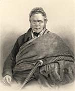
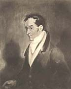
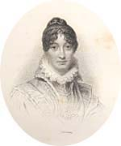

|
|
Home | Corson
Collection | Biography | Works | Image
Collection | Recent Publications | Portraits | Correspondence | Forthcoming
Events | E-texts | Contact
|  |
|
Pages on People Associated
with Scott
|
|
 |
For the moment, this page lists only links which specifically
discuss Scott's relationship with the figure in question. It will
eventually be expanded to include more general pages on Scott's
friends, contemporaries, and literary models.
-
- Sources and Literary Models
-
-
- Other
1. Friends
and Associates
- Archibald
Constable (1774-1827) - From the LoveToKnow
Classic Encyclopedia site based on the 11th edition of
the Encyclopaedia Britannica (1911), this biographical
page on the Scottish publisher focuses primarily on his dealings
with Scott.
- Leyden
Monument, Denholm - From the visitor information site Discover
the Borders, a page on a monument to Scott's friend, the
scholar and poet John Leyden, who was born in Denholm in 1775.
The page refers to the assistance that Leyden gave Scott in
gathering materials for the Minstrelsy
of the Scottish Border.
- Pringles
of Whitsome and Smailholm - An extract from William Anderson's The
Scottish Nation (1860-63) reprinted by Tom
Paterson's Scottish Roots, with paragraphs on Scott's friend
and fellow Advocate, Alexander Pringle of Whytbank, who accompanied
Scott to the field of Waterloo (see The
Field of Waterloo and Paul's
Letters to his Kinsfolk) and on his father,
also Alexander, whom Scott mentions in Marmion.
- Pringles
of Whytbank and Yair - From Clan
Pringle, the same extract as above from The Scottish
Nation, with photographs of Whytbank Tower.
- Joseph
Train by Charles Dickens - From Frances Coakley's A
Manx Notebook, this page reprints an article from Household
Words (1853) on the Gallowegian antiquarian Joseph Train,
which particularly stresses his friendship with Scott and his
possible provision of source material for Guy
Mannering and for the narrative framework of Tales
of My Landlord.
Back to top
2. Literary Sources
and Inspirations
Back to top
3.
Figures Inspired by Scott
- Literary
allusions in Jane Austen's Writings - From The
Republic of Pemberley, an index to literary allusions and
quotations in the fiction and correspondence of Jane Austen
which includes an entry for Scott.
- 'Honoré de
Balzac and the "Genius" of Walter Scott: Debt and
Denial' - An article by Edward C. Smith III in Comparative
Literature Studies, 36.3 (1999), arguing that what
Balzac primarily admired in Scott was his 'innovative ability
to collect and organize the random details of reality within
a comprehensive vision which was able to provide both conceptual
stability and narrative coherence'.
- Berlioz
Photo Album 8a: Writers and Poets - Part of Michel Austin
and Monir Tayeb's The Hector
Berlioz Website, this page lists Scott amongst the writers
and poets who inspired Berlioz and includes links to pages
on Berlioz's overtures Waverley (1827) and Rob
Roy Macgregor (1831).
- Cooper
as the American Scott - From James
Fenimore Cooper: A Literary Pioneer, a site edited by Sarah
Evans, Abby Fifer, and Jenn Reynolds, students at the University
of Virginia, this page gives a summary of George Dekker's
comparison of the two writers in James Fenimore Cooper,
the American Scott (1967).
- James
Fenimore Cooper versus Sir Walter Scott - From the writing
community site Everything2.com,
a comparison by 'Roninspoon' of the themes of James Fenimore
Cooper and Sir Walter Scott, subtitled 'The Fight of the Nineteenth
Century!'.
- 'History,
Language, and the Leatherstocking Tales' - From the James
Fenimore Cooper Society site, this essay by William P.
Kelly (Queens College, CUNY) was originally published in James
Fenimore Cooper: His Country and His Art, no. 2 (1979).
It charts Cooper's transformation of a historiographic model
inherited from Scott and from the Scottish Common Sense School.
- 'Revolution
and the Historical Novel: Cooper's Transforming of European
Tradition' - From the James
Fenimore Cooper Society site, this essay by John McWilliams
(Middlebury College) was originally published in James
Fenimore Cooper: His Country and His Art, no. 8 (1991).
It argues that Cooper's novels The Spy (1821) and Lionel
Lincoln (1825) reject the wavering European hero of Scott,
Balzac, and Pushkin but accept the notion of innate character.
- 'Truth
and Consequences: James Fenimore Cooper on Scott, Columbus,
Bumppo, and Professional Authorship' - From the James
Fenimore Cooper Society site, this essay by Stephen P.
Harthorn (University of Tennessee) was originally published
in James Fenimore Cooper Society Miscellaneous Papers,
20 (2004), pp. 1-10. Click here for
a brief précis.
- Frederick
Douglass, Sir Walter Scott and Robert Burns - Alasdair
Pettinger's site Frederick
Douglass in Scotland describes the visit made by the black
anti-slavery activist in 1846. This page describes Douglass's
love of Scott and Burns. It was a reading of The
Lady of the Lake that inspired him to adopt the name
of the 'black Douglas(s)'.
- Under
the Same Sky - From Io,
Renzo e Lucia, a web project by the pupils of the XVIII
Agosto 1860 School of Potenza, Italy, devoted to Alessandro
Manzoni's novel I Promessi Sposi (1821-42), these
pages discuss the influence of Scott on Manzoni, tendentiously
contrasting the picturesque superficiality of the former with
the moral and psychological commitment of Manzoni.
- On "Seferis
on Eigg"' - From 18
Essays on Sonnets from Edwin Morgan's Sonnets from Scotland at EdwinMorgan.com,
this essay by Sebastiaan Verweij discusses (and partially quotes)
Scott's account of his visit to Eigg in 1814 as a source for
Morgan's sonnet 'Seferis on Eigg' (originally published in
Morgan's 1984 collection Sonnets from Scotland).
Back to top
4. Models
for Scott's Characters
The Antiquary | Ivanhoe | 'Lochinvar' | The
Pirate | Peveril of the Peak | Rob
Roy
The
Antiquary
- Edie
Ochiltree's Grave, Roxburgh - From the visitor information
site Discover
the Borders, a page on the carved gravestone of Andrew
Gemmels, the 'gaberlunzie man', who died at the age of 106,
and upon whom Scott is though to have based the character Edie
Ochiltree in The
Antiquary. Together with a photograph of the gravestone,
the page gives directions and information on visiting hours.
Ivanhoe
- Rebecca
Gratz - From Jewish
Women's Archive, this page considers the claim of Jewish-American
philanthropist Rebecca Gratz to be considered the model for
Rebecca in Scott's Ivanhoe.
Scott is purported to have learned of Gratz via their mutual
friend Washington Irving.
'Lochinvar'
- Lochinvar,
Our White Knight? - From the genealogical Land
Family site, this text traces a family connection with
James Montgomery who has been proposed as a model for Scott's
'young Lochinvar'. There is a link to
a text of the ballad 'Lochinvar' (sung by Lady Heron in Marmion).
Peveril
of the Peak
The Pirate
- John
Gow - From the Fea
Family Website, a biographical page on John Gow, 'the Orkney
Pirate' which notes Scott's departures from the historical
account when recasting Gow as Captain Cleveland in The
Pirate. James Fea, an ancestor of the site editors,
was instrumental in Gow's capture.
- John
Gow, the Orkney Pirate - From the heritage site Orkneyjar,
a biographical page on the pirate John Gow (ca 1698-1725) who
is thought to be the model of Captain Cleveland in Scott's The
Pirate.
- Bessie
Millie - From the genealogical site Ancestral
Orkney, a paragraph on the Stromness 'witch' Bessie Millie
who was reputed to sell favourable winds to sailors. She is
said to have been visited by Scott during his 1814 visit to
Orkney and to have inspired the character of Norma of the Fitful
Head in The Pirate. She is also thought to have provided
Scott with an account of the life of John Gow whom she claimed
to have known.
Rob Roy
- Rob Roy
MacGregor (or McGregor) - From the tourist information
site InCallander,
a biographical page on Rob Roy MacGregor, including a lengthy
extract from Picturesque Scotland (1883) by Francis
Watt and Andrew Carter.
Back to top
5. Other
- Significant
Scots: Thomas Graham - From Electric
Scotland, an entry from the Biographical Dictionary
of Eminent Scotsmen (1856) on Thomas Graham, Lord Lynedoch,
the Scottish general who commanded the British contingent at
the Battle of Barossa (1811). Scott's lines of tribute in The
Vision of Don Roderick are quoted. The same resource
provides a further
page on Thomas Graham from James Taylor's The Great
Historic Families of Scotland (1887).
Back to top

Back to index
Last updated: 01-Sept-2009
© Edinburgh University Library
|
|